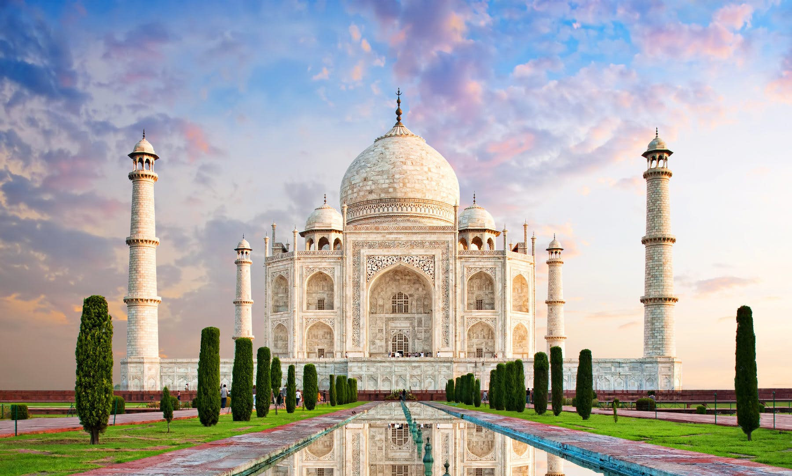
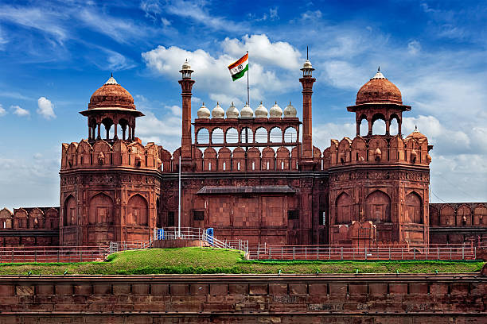

Indian Tourism

The Taj Mahal
The Taj Mahal is one of the most beautiful and famous monuments in the world. It is located in Agra, Uttar Pradesh, on the banks of the Yamuna River.
The Taj Mahal was built by Mughal Emperor Shah Jahan in memory of his beloved wife Mumtaz Mahal, who died in 1631. As a symbol of love, the Taj Mahal
attracts millions of visitors every year. It is made of white marble and looks especially beautiful in the moonlight. The construction began in 1632
and was completed in 1653, taking about 22 years and thousands of workers to build.The design of the Taj Mahal is a mix of Indian, Persian, and Islamic
architectural styles. It has a large white dome in the center, four tall minarets at the corners, and beautiful carvings all over the walls. The building
is surrounded by green gardens, fountains, and a long reflecting pool. Inside the Taj Mahal is the tomb of Mumtaz Mahal and Shah Jahan, placed side by side.
The walls are decorated with beautiful calligraphy of Quran verses and floral patterns.
India Gate is a famous war memorial located in New Delhi, India. It was built to honor the brave Indian soldiers who died during World War I and the Afghan Wars while fighting for the British Indian Army.
The monument was designed by Sir Edwin Lutyens, a British architect, and the foundation was laid in 1921. It was completed in 1931. India Gate stands 42 meters tall and is made of red sandstone and granite.
The names of around 13,000 soldiers are inscribed on its walls.India Gate looks like a huge arch, similar to the Arc de Triomphe in Paris. It is located on Rajpath, near Rashtrapati Bhavan. Around the monument,
there are green lawns and fountains, making it a peaceful and beautiful place for visitors and families.In 1971, after the India-Pakistan war, a structure called Amar Jawan Jyoti was added under India Gate.
It has a black marble platform with a rifle and a soldier’s helmet and an eternal flame (jyoti) that burns day and night to honor the soldiers who sacrificed their lives. In 2022, the flame was merged with the
National War Memorial, which is built nearby, but India Gate still remains a strong symbol of national pride.

The India Gate

The Red Fort
The Red Fort, also known as Lal Qila, is one of the most famous historical monuments in India. It is located in Old Delhi, on the banks of the Yamuna River. The fort was built by the Mughal Emperor Shah Jahan in 1638,
when he decided to shift his capital from Agra to Delhi. It took around 10 years to complete and was finished in 1648. The Red Fort gets its name from the red sandstone used in its construction. This grand fort is a
symbol of India’s rich history, Mughal architecture, and national pride.The Red Fort is spread over a huge area of about 254 acres and is surrounded by massive red walls that are 18 to 33 meters high. The fort has many
beautiful buildings inside, including the Diwan-i-Aam (Hall of Public Audience), Diwan-i-Khas (Hall of Private Audience), Moti Masjid (Pearl Mosque), Rang Mahal, Royal Baths, and the emperor's palace. The architecture of
the Red Fort is a mix of Persian, Timurid, and Indian styles. The walls and ceilings are decorated with carvings, flowers, and precious stones. There were also beautiful gardens and fountains which made the fort look like
a paradise in those days.The Red Fort was the center of Mughal power for nearly 200 years.
The Ajanta Caves are one of the most beautiful and famous historical places in India. They are located near Aurangabad in Maharashtra, hidden in the Sahyadri hills. These caves were carved into the rock over 2,000 years ago and are known for their amazing paintings, sculptures, and Buddhist architecture.
There are 30 caves in total, and they were built between the 2nd century BCE to 6th century CE. The caves were made during two different periods — first by the Satavahana dynasty, and later by the Vakataka kings.Ajanta Caves were mainly used by Buddhist monks for meditation, prayer, and study.
The caves are divided into two types — Viharas (monasteries) and Chaityas (prayer halls). These caves have large halls, carved pillars, and rooms where monks lived. The walls and ceilings are decorated with beautiful paintings made using natural colors. These paintings show scenes from the life of
the Buddha and stories from the Jataka tales, which tell about Buddha’s past lives.

The Ajanta Caves

The Qutub Minar
Qutub Minar is one of the most famous historical monuments in India. It is located in Delhi and is known for its height, beauty, and historical importance. Qutub Minar is the tallest brick minaret in the world, with a height of 73 meters.
It was built in 1192 by Qutb-ud-din Aibak, the first ruler of the Delhi Sultanate. He started the construction after his victory over the last Hindu ruler of Delhi. However, he could only complete the first floor. His successor Iltutmish
added three more storeys, and later, Firoz Shah Tughlaq completed the fifth and final floor.The minar is made of red sandstone and marble, and its design shows Indo-Islamic architecture. The tower has five storeys, each with a balcony.
It is decorated with beautiful carvings and verses from the Quran. The base of the minar is wide and it becomes narrower as it goes up. There are 379 steps inside to reach the top, but entry to the top is now closed for safety reasons.
The Qutub Minar complex also has other historical buildings like the Quwwat-ul-Islam Mosque (the first mosque in India), the Iron Pillar, Alai Darwaza, and Alai Minar.